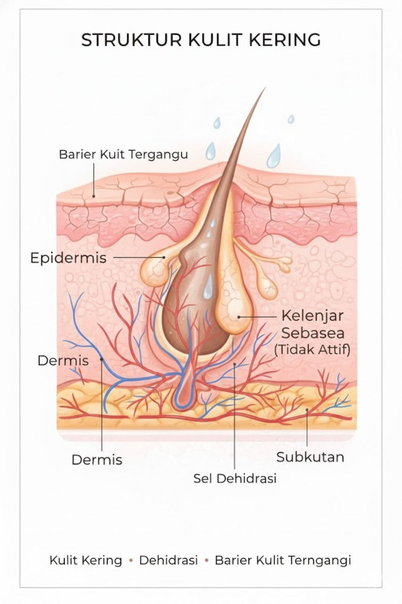

Tips Pola Hidup & Faktor Biologis
Pola hidup yang tepat membantu kulitmu tetap stabil, segar, dan bebas kilap

Berdasarkan jawabanmu, jenis kulitmu termasuk dalam kategori kering.
Kulit kering cenderung menghasilkan minyak alami dalam jumlah lebih sedikit sehingga terasa kaku, kasar, atau mudah mengelupas. Jenis kulit ini membutuhkan hidrasi ekstra karena lebih rentan terhadap garis halus dan penuaan dini..

Pilih kandungan yang sesuai kebutuhan kulitmu dan gunakan secara bertahap untuk hasil terbaik
Menjaga hidrasi tanpa membuat kulit berminyak. Cocok dipakai pagi dan malam.
Menjaga kelembapan kulit dan membuatnya terasa lebih lembut.
Mengangkat sel kulit mati dan memperbaiki tekstur kulit.
Merawat kulit agar tetap halus dan terhidrasi.

Batasi penggunaan eksfolian kuat dan bahan aktif dengan efek mengeringkan, seperti AHA/BHA berlebihan atau retinol tanpa pelembap pendamping, karena dapat mempercepat hilangnya kelembapan alami kulit. Lingkungan berudara kering atau dingin juga berisiko membuat kulit semakin terasa kaku dan sensitif.
Pilihan bahan herbal alami yang dapat mendukung rutinitas perawatan kulitmu
Aplikasikan gel lidah buaya sebagai masker alami untuk membantu menjaga kelembapan dan menenangkan kulit kering. .

Manfaatkan minyak zaitun sebagai pelembap tambahan guna membantu mengurangi rasa kering pada kulit.

Penggunaan gel lidah buaya sebagai masker wajah membantu menjaga kelembapan permukaan kulit dengan memberikan hidrasi yang menenangkan tanpa mengganggu fungsi alami lapisan pelindung kulit. Mekanisme ini membantu mengurangi rasa kering dan ketegangan pada kulit melalui dukungan keseimbangan air yang optimal.
Sementara itu, minyak zaitun berperan sebagai emolien alami yang membantu menutrisi kulit dan mengunci kelembapan pada lapisan luar kulit. Peran masing-masing bahan ini mendukung kelembutan kulit, menjaga hidrasi lebih tahan lama, serta membuat kulit kering terasa lebih nyaman dan terawat secara biologis.
Pola hidup yang tepat membantu kulitmu tetap stabil, segar, dan bebas kilap